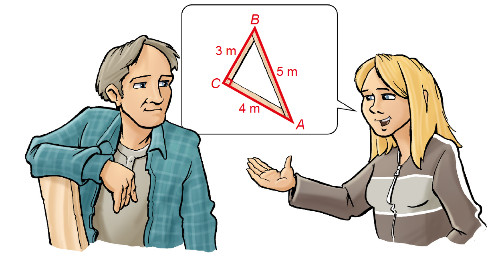
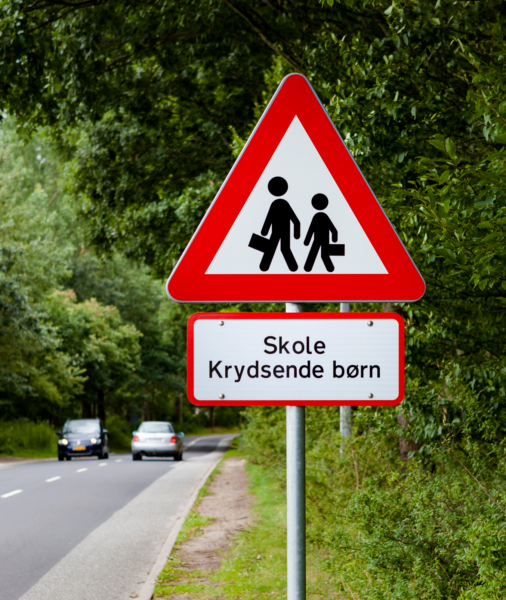
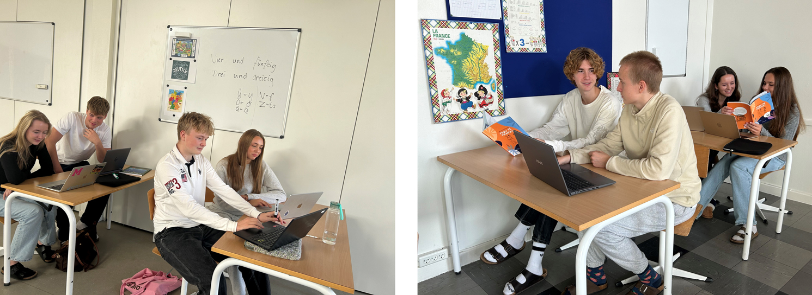
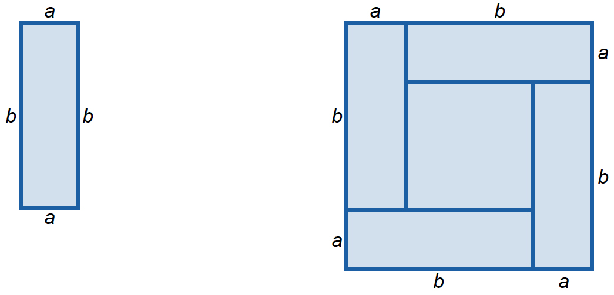
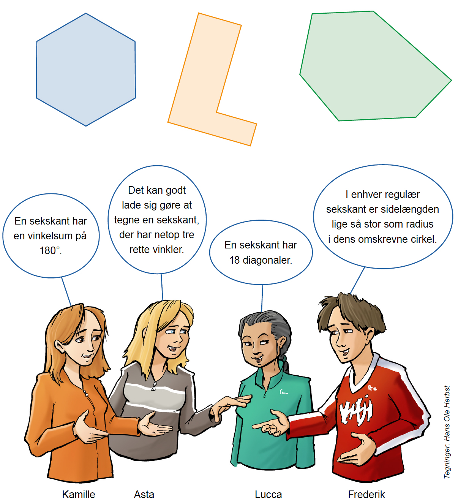

Kl. 10.00-13.00
Kære elev
Prøven består af 7 opgaver. Du har 3 timer til at løse dem.
Ved hver opgave står der, hvor mange point den højst kan give.
Prøven kan i alt højst give 65 point. Du bestemmer selv, hvilken rækkefølge du laver opgaverne i, og hvor lang tid du vil bruge på hver af dem.
Det er vigtigt, at du begrunder dine svar i alle opgaver.
Det betyder, at du i hver opgave skal vise eller forklare, hvordan du er nået frem til dit svar. Du kan fx begrunde dit svar med regneudtryk eller tegninger med tilhørende skriftlige forklaringer. Det kan være forskelligt fra opgave til opgave, hvordan du begrunder.
En del af de point, du kan få i hver opgave, kommer fra dine begrundelser.
I de fleste opgaver kan du ikke få det højeste antal point, hvis du ikke begrunder dit svar, selv om dine resultater er rigtige.
I nogle af opgaverne skal du beregne et antal eller en størrelse. I andre opgaver skal du vise, hvordan du finder frem til et bestemt resultat eller afgøre, om en påstand er sand eller falsk.
Der er også opgaver, hvor du skal løse et matematisk problem ved at undersøge. I disse opgaver forventer vi ikke, at du på forhånd kender en metode, du kan bruge til at løse problemet. Ordet ’undersøg’ signalerer, at du selv skal finde på en god måde at løse problemet på ved at bruge matematik, du kender.
God arbejdslyst.
Styrelsen for Undervisning og Kvalitet
1
Kamille tjener penge på lodsedler
Opgave 1 giver højst 10 point|
Kamille sælger lodsedler for 40 kr. pr. stk.
Hun tjener 16 kr. pr. lodseddel, hun sælger.
Tegninger: Hans Ole Herbst
|
| 1.1 |
Hvor mange penge tjener Kamille, hvis hun sælger 45 lodsedler?
|
||
| 1.2 |
Hvor mange lodsedler skal Kamille sælge, hvis hun vil tjene 1000 kr.?
|
||
| 1.3 |
Hvor stor en procentdel af prisen for en lodseddel tjener Kamille?
|
||
|
Kamille skal betale 8 % i arbejdsmarkedsbidrag af de penge, hun tjener. Resten af pengene får hun udbetalt.
1.4
Undersøg, hvor mange lodsedler hun mindst skal sælge for at få udbetalt 500 kr.
|
2
Et redskab til rette vinkler
Opgave 2 giver højst 8 point|
Asta og hendes far vil lave et redskab, der har form som en retvinklet trekant. De skal bruge redskabet til at sikre, at vinklerne bliver rette på en stor terrasse, de vil bygge. Asta foreslår, at de skruer tre lange brædder sammen. Se målene på tegningen.

Tegninger: Hans Ole Herbst
|
| 2.1 |
Hvor stor er summen af de to andre vinkler i trekanten?
|
||
| 2.2 |
Du skal vise, at Asta har ret. Du kan bruge beregning eller tegning.
|
||
| 2.3 |
Undersøg og giv et eksempel på, hvor lange hver af de to andre sider i en retvinklet trekant kan være, hvis den længste side er 4,00 m.
|
||
3
Størrelsen på bokse til heste
Opgave 3 giver højst 6 point|
På Luccas rideskole skal hestene have nye bokse. Jo større hestene er, jo større skal boksene være. Teksten i den blå boks forklarer, hvordan man beregner det mindste areal, en boks må have.
|
|||||||
| 3.1 |
Du skal vise sammenhængen mellem stangmål og mindste areal på tre forskellige måder:
• Udfyld de tomme felter i en tabel ligesom den her på siden. Brug evt. svararket. • Tegn en graf. • Skriv en funktionsforskrift.
|
||||||||||||||||||||
4
Fartmålinger
Opgave 4 giver højst 10 point|
I januar foretog politiet en fartmåling af 50 biler, der kørte forbi Frederiks skole. Eleverne i Frederiks klasse har ordnet datasættet fra fartmålingen og lavet diagrammet herunder. Det ordnede datasæt er på filen FART_MAJ_25. |
 Foto: Colourbox |
fart (km/t)
 bil nr.
bil nr. (ordnet efter fart) |
| 4.1 |
Hvor mange biler kørte hurtigere end fartgrænsen på 50 km/t?
|
||
| 4.2 |
Hvor stor er variationsbredden i datasættet?
|
||
| 4.3 |
Lav et diagram, der viser resultatet af politiets nye fartmåling.
|
||
| 4.4 |
Undersøg, om elevrådets kampagne har virket. Du kan fx bruge deskriptorer til at begrunde dit svar.
|
||
5
Fordeling af elever med fransk og tysk
Opgave 5 giver højst 11 point|

Foto: Opgavekommissionen i matematik
|
| 5.1 |
Hvor mange elever i 9. A har tysk?
|
||
| 5.2 |
Hvor stor en brøkdel af eleverne i 9. B har tysk?
|
||
|
Tabellen viser, hvor mange elever der har fransk og tysk i fire andre klasser.
|
| 5.3 |
I hvilke to klasser er forholdet mellem antal elever, der har fransk, og elever, der har tysk, det samme?
|
||
|
I den blå boks er der to oplysninger om antallet af elever i Kamilles klasse.
5.4
Du skal bruge oplysningerne til at undersøge, hvor mange elever der er i klassen.
|
6
Rektangler og kvadrater
Opgave 6 giver højst 11 point|
Figuren til venstre viser et rektangel med sidelængderne a og b. På figuren til højre er fire af de samme rektangler sat sammen, så de danner et stort kvadrat med et lille kvadrat i midten.
 |
| 6.1 |
Hvor stor er omkredsen af rektanglet, hvis a er 1,2 cm, og b er 3,7 cm?
|
||
| 6.2 |
Hvilke værdier kan a og b have, hvis omkredsen af det store kvadrat er 20 cm? Beskriv alle de løsninger, der er.
|
||
| 6.3 |
Hvor stort er arealet af det store kvadrat? Du skal svare med et udtryk, hvor a og b indgår.
|
||
| 6.4 |
Hvor stort er arealet af det lille kvadrat i midten af det store kvadrat? Du skal svare med et udtryk, hvor a og b indgår.
|
||
7
Påstande om sekskanter
Opgave 7 giver højst 9 point|
Kamille, Asta, Lucca og Frederik kommer med forskellige påstande om sekskanter.
 |
|||
| 7.1 |
Undersøg hver af de fire elevers påstande. Du skal forklare, hvorfor hver påstand er sand eller falsk.
|
||
Regneark til opgave 4
Excel
Du kan tilgå regnearket som en Sheets-fil via linket nedenfor, hvis I anvender Sheets-filer på din skole.
Google Sheets
Det følgende er ikke en del af prøven:
Dette prøvesæt er omfattet af ophavsretten, jf. ophavsretslovens § 1.
Prøvesættet må alene anvendes til den på prøvesættet anførte prøve.
Al anden anvendelse af prøvesættet, herunder visning eller deling f.eks. via
internettet, sociale medier, portaler og bøger, udgør en krænkelse af Børne- og
Undervisningsministeriets og evt. tredjemands ophavsret og er ikke tilladt.
Overtrædelse af ophavsretten kan være erstatningspådragende og/eller strafbart.
Prøvesættet kan dog, efter at prøven er afsluttet, anvendes til undervisningsbrug på
uddannelser m.v. omfattet af den lovgivning, som Styrelsen for Undervisning og Kvalitet
administrerer.